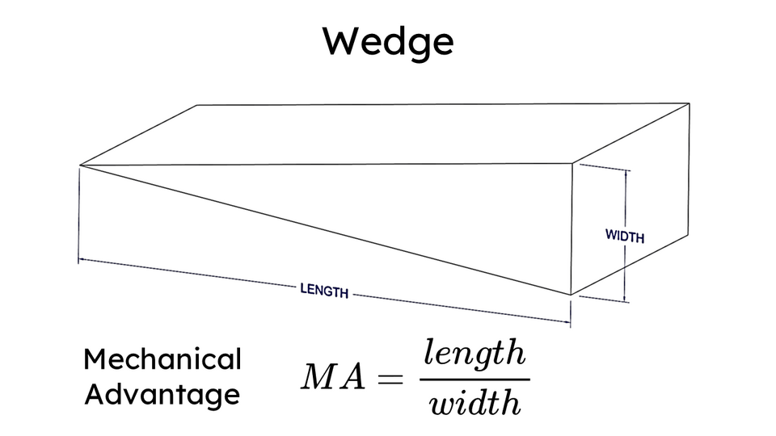

Módulo 05 — Funciones
Una función agrupa código reutilizable bajo un nombre.
Definición básica

def saludar(nombre):
return f"Hola, {nombre}"
mensaje = saludar("Ana")Type hints (recomendado)
def saludar(nombre: str) -> str:
return f"Hola, {nombre}"Docstrings
def area_circulo(radio: float) -> float:
"""Calcula el área de un círculo dado su radio.
Args:
radio: Radio del círculo (debe ser positivo)
Returns:
Área en unidades cuadradas
"""
return 3.14159 * radio ** 2
help(area_circulo) # muestra el docstringParámetros
Posicionales
def restar(a, b):
return a - b
restar(10, 3) # 7Con valor por defecto
def saludar(nombre, idioma="es"):
if idioma == "es":
return f"Hola, {nombre}"
return f"Hello, {nombre}"
saludar("Ana") # 'Hola, Ana'
saludar("Ana", "en") # 'Hello, Ana'def malo(x, lista=[]): # ⚠️ ANTI-PATRÓN
lista.append(x)
return lista
malo(1) # [1]
malo(2) # [1, 2] ← persistió entre llamadas
def bueno(x, lista=None):
if lista is None:
lista = []
lista.append(x)
return listaPor nombre (keyword arguments)
saludar(nombre="Ana", idioma="en")*args — número variable de posicionales
def sumar(*numeros):
return sum(numeros)
sumar(1, 2, 3, 4) # 10**kwargs — número variable de keyword
def crear_usuario(**datos):
print(datos)
crear_usuario(nombre="Ana", edad=30, ciudad="BA")
# {'nombre': 'Ana', 'edad': 30, 'ciudad': 'BA'}Combinación
def funcion(pos1, pos2, /, normal, *args, kw_only, **kwargs):
pass
# pos1, pos2: solo posicionales (antes del /)
# normal: posicional o por nombre
# *args: extras posicionales
# kw_only: solo por nombre (después de *args)
# **kwargs: extras por nombreUnpacking en llamadas
args = [1, 2, 3]
kwargs = {"sep": "-", "end": "!\n"}
print(*args, **kwargs) # 1-2-3!Scope (alcance)
x = 10 # global
def funcion():
y = 5 # local
print(x) # accede a global (lectura)
# x = 99 # ERROR: lo trataría como local sin global
def modifica_global():
global x
x = 99 # ahora sí modifica el globalClosures
def crear_contador():
n = 0
def incrementar():
nonlocal n
n += 1
return n
return incrementar
c = crear_contador()
c() # 1
c() # 2Funciones lambda (anónimas)
Funciones cortas de una sola expresión:
cuadrado = lambda x: x ** 2
suma = lambda a, b: a + b
# Útiles como argumento a funciones de orden superior
sorted([3, 1, 2], key=lambda x: -x) # [3, 2, 1]def. Las lambdas anónimas son para casos donde un nombre estorbaría más que ayudar.Funciones como objetos de primera clase
def aplicar(funcion, valor):
return funcion(valor)
aplicar(lambda x: x * 2, 5) # 10
# Lista de funciones
operaciones = [abs, str, lambda x: x + 1]
for op in operaciones:
print(op(-5))Decoradores
Funciones que reciben/devuelven funciones, modificando comportamiento sin tocar el código original:
import time
def cronometro(fn):
def wrapper(*args, **kwargs):
inicio = time.time()
resultado = fn(*args, **kwargs)
print(f"{fn.__name__} tomó {time.time() - inicio:.4f}s")
return resultado
return wrapper
@cronometro
def calcular_pesado():
sum(i**2 for i in range(10**6))
calcular_pesado()
# calcular_pesado tomó 0.0823sfunctools.wraps para preservar metadata
from functools import wraps
def mi_decorador(fn):
@wraps(fn) # preserva nombre, docstring, etc.
def wrapper(*args, **kwargs):
return fn(*args, **kwargs)
return wrapperDecoradores con argumentos
def repetir(veces):
def decorador(fn):
def wrapper(*args, **kwargs):
for _ in range(veces):
fn(*args, **kwargs)
return wrapper
return decorador
@repetir(3)
def saludar():
print("hola")Buenas prácticas
- Una función = una responsabilidad (Single Responsibility Principle)
- Nombres descriptivos en verbo:
calcular_total, noct - Pocos parámetros: si tenés más de 4-5, pensá en una clase o un dict
- Funciones puras cuando puedas: misma entrada → misma salida, sin side effects
- Docstrings en funciones públicas
Errores típicos con funciones
return — la función corre, calcula... y devuelve None.
def doble(x):
x * 2 # ❌ calcula y tira el resultado
doble(5) # None
def doble(x):
return x * 2 # ✅TypeError: unsupported operand type(s) for +: 'NoneType' and 'int'.
def agregar_iva(precios):
for i, p in enumerate(precios):
precios[i] = p * 1.21 # ❌ le arruinaste la lista original
return precios
def agregar_iva(precios):
return [p * 1.21 for p in precios] # ✅ devolvés una lista nuevatotal = 0
def sumar(x):
total = total + x # ❌ UnboundLocalError: local variable 'total' referenced before assignment
def sumar(x):
global total # ✅ funciona (aunque suele ser mejor devolver el valor y asignar afuera)
total = total + xfs = [lambda: i for i in range(3)]
[f() for f in fs] # ❌ [2, 2, 2]
fs = [lambda i=i: i for i in range(3)]
[f() for f in fs] # ✅ [0, 1, 2] — el default congela el valorCheckpoint — ¿lo tenés claro?
Si crear_contador() ya terminó de ejecutarse, ¿por qué la función que devolvió sigue recordando n?
Porque incrementar es un closure: al definirse adentro de crear_contador se quedó con una referencia viva al entorno donde nació. Mientras exista la función interna, Python no puede descartar ese n — y no es una copia del valor, es la misma celda de memoria. De ahí salen dos consecuencias: cada llamada a crear_contador() devuelve un contador con su propio n independiente, y hace falta nonlocal para escribirle, porque sin esa palabra n += 1 crearía una variable local nueva.
¿Qué diferencia hay entre global y nonlocal?
global dice "esta variable vive en el módulo, en el nivel más externo". nonlocal dice "vive en la función que me encierra, que no es el nivel global" — es el que usan los closures. Si en crear_contador escribieras global n, Python iría a buscar un n de módulo y no encontraría el del closure. Los dos existen por el mismo motivo: asignarle a un nombre lo vuelve local por defecto, así que cuando querés escribir "hacia afuera" tenés que declararlo explícitamente.
¿Por qué el wrapper de un decorador casi siempre se escribe como wrapper(*args, **kwargs)?
Porque el decorador no sabe (ni debería saber) qué firma tiene la función que va a envolver. Con *args, **kwargs el wrapper acepta cualquier combinación de argumentos y se los reenvía tal cual a la función original. Si le pusieras parámetros fijos, ese decorador serviría solo para funciones con esa firma exacta y rompería con cualquier otra. Es justamente la diferencia entre un decorador reutilizable y uno atado a un único caso.
Ejercicios
- Función que recibe una lista y devuelve
(min, max, promedio) - Decorador
@cacheque memoize resultados (sin usarfunctools) - Función con
*argsy**kwargsque loguea todos sus argumentos - Closure que genera IDs únicos incrementales
- Función recursiva para Fibonacci, comparar performance con/sin memoización
🧠 Autoevaluación rápida
Respondé sin mirar arriba. Cada pregunta te explica el porqué.
1. ¿Por qué def malo(x, lista=[]) es un anti-patrón?
malo(1) da [1] pero malo(2) da [1, 2]. La solución es lista=None y crearla adentro.2. En def crear_usuario(**datos), ¿de qué tipo es datos adentro de la función?
**kwargs junta todos los argumentos pasados por nombre en un diccionario. Su primo *args junta los posicionales sobrantes, y ese sí llega como tuple.3. ¿Qué hace poner @cronometro arriba de def calcular_pesado()?
@decorador es azúcar para calcular_pesado = cronometro(calcular_pesado). El nombre queda apuntando al wrapper, que envuelve a la función original. Usá @wraps(fn) adentro para no perder el nombre ni el docstring.